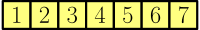
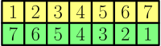
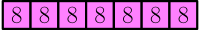
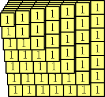
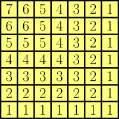
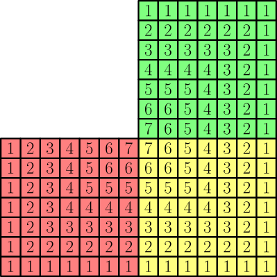
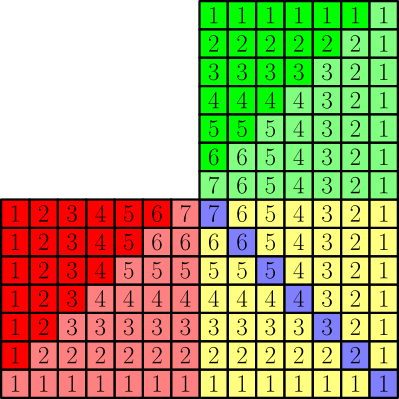
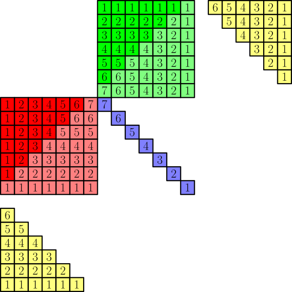
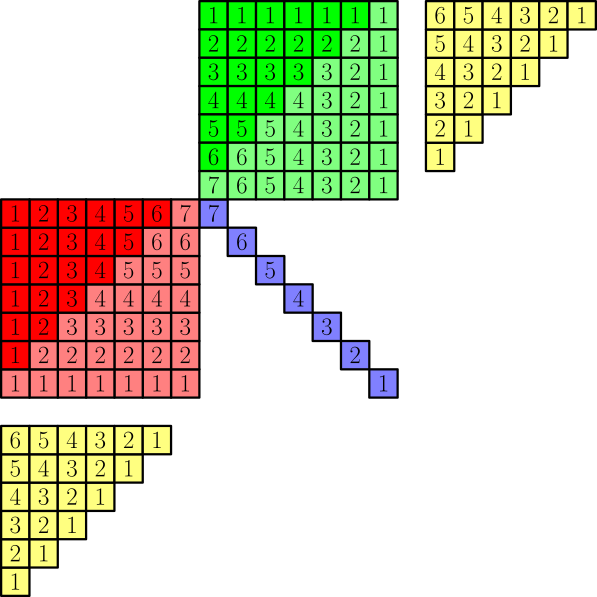
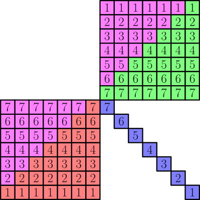

Sums¶
The results on this page work for any integer $n \ge 1$.
Sum of positive integers up to $n$¶
Let's calculate $$ 1 + 2 + 3 + \dots + n. $$ To visualize the numbers being added, we draw this (the drawing has $n=7$, but it works similarly for other values of $n$):

Let's make a green copy of the numbers and reverse the copy. This does not change the sum of the numbers.

Because we only care about the sum of all numbers, we can replace two squares containing $1$ and $7$ with one square containing $8$, or more generally, $a$ and $b$ squares with one $a+b$ square. Let's do it for each column. I'll use pink squares for the replacing results.

The number in each square is now $n+1$ and we have $n$ squares, so the sum is $$ \underbrace{(n+1)+(n+1)+\dots+(n+1)}_{\text{adding $n$ times}} = n(n+1). $$ This includes the green squares and the yellow squares, and because the green squares and yellow squares have the same numbers (although in a different order), the sum of yellow squares is half of what we got.
$$ 1+2+\dots+n = \frac{n(n+1)}{2} $$
Sum of Squares¶
Let's calculate $$ 1^2+2^2+\dots+n^2. $$ Again, we visualize this for $n=7$, like this:

Let's stack all of these on top of each other and add the numbers.


Let's create two flipped copies of this.

Let's also change some colors.

Now let's separate the yellow parts from the drawing.

For the yellow part at top right, we now slide each row left so that they line up. For the yellow part at bottom left, we shift the columns up instead.

Now the yellow parts fit to the highlighted places. Let's move them there and add the numbers. For example, the third row of the red triangle is now $\red{1~2~3~4~5~5~5}$, and $\color{#f60}{4~3~2~1}$ is added to the beginning of it. That gives $\magenta{5~5~5~5}~\red{5~5~5}$.
